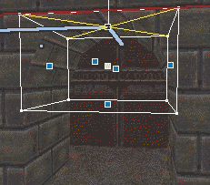
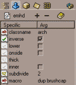

Caps and Arches (Brushes)
Updated 02 Mar 2001
- QuArK Information Base
- 2. Map editing
- 2.4. Shape Builders
|
|
Caps and Arches (Brushes)
Updated 02 Mar 2001
|
Upper levels: - QuArK Information Base - 2. Map editing - 2.4. Shape Builders |
|
2.4.3. Caps and Arches (Brushes) |
[ - - ] |
Brush-based `Caps' and arches are made by the same shape-builder, and arches are probably its most important function, so that's what gets discussed most here. |
|
Index |
|
Making an arch |
tiglari - 02 Mar 2001 | [ Top ] |
So there's the shape; the next problem is to control the textures. |
|
Texturing the arch |
tiglari - 02 Mar 2001 | [ Top ] |
|
 Arches get the textures for their front and back faces off the front and back faces of their guide brush. So all we have to is to tag some face of the wall (assuming the other wall bits are properly aligned), then select the front face of the arch's guide brush, and then 'RMB -> Project Texture from Tagged'. and ditto for the back wall. The results should look more or less as to the right (the red line is the part of the outline of the wall-face that the texture was projected from). If your arch's front or back textures are misaligned, you should fix them now; if they're not, mess them up and then fix them. The inside of the arch is unfortunately not so straightforward. It would be nice if there was some way to wrap the texture on the front or back onto the inside curve, but there isn't, at least without using specially pre-prepared and proportioned textures. So we basically are stuck with a misalignment here, which can be ameliorated by using some fairly bland, unpatterned texture on the inside faces.
In the game, the joins may be unpleasantly visible, due to light effects, but if there is an arghrad-like editing tool, this can be fixed by putting the same lightvalue (or equivalent property) onto the top face of the guide brush and the other faces forming the opening. The top-brush's lightvalue (& all other specifics) will be copied onto the inner faces of the generated brushes. If you put an appropriately patterned texture around the inside of the arch, and look closely, you'll see that the texture scale is compressed somewhat on the curved portion; that's because its being positioned and scaled on the curve so that it will join up smoothly with what's on the walls, but the distance around the flat wall face is longer than on the smooth curve-face. This is because of a bit of tricky coding in the duplicator, whereby the texture scale is compressed just enough so that the distance in texture-space around the curve equals the distance, w.r.t the top-face scale, around the three faces defining the arch. |
|
Specifics |
tiglari - 02 Mar 2001 | [ Top ] |
|
 The RMB menu currently at least offers only two basic shapes (arch/cap, bevel) in two orientations each, but the 'duplicators' that implement these shapes have a considerable number of specifics that implement variations. You can see what these specifics do by making an arch and experimenting. If you uncheck the 'inverse' specific for example, the arch will turn into a 'cap'. In general, inverse shapes are concave, non-inverse their convex counterparts. Another important specific is 'subdiv'; it's value is a number, 2 upon creation, that determines the number of segments each arch-half or bevel is divided into. 2 seems to be the minimum to provide a half-decent appearance; more will of course imply more polys. Also there's 'inner'. There are two ways of approximating an arc with straight edges, the edges can lie inside or outside the curve of the arc. Outside is the default, checking 'inner' switches to the inner method. Another useful one is 'lower'. This flips the arch upside-down, so that the curved surface is a U that you can walk over. Lower arches take their texture from their bottom ('down') rather than their top ('up') faces. Also there's 'onside' for caps and arches, and 'standup' for bevels. Note that these change the face that the texture comes off, so for an 'onside' cap/arch, it will be the back face, for a 'standup' bevel, the top. All of these shapes are good candidates for being 'detail' in games that support this; since the faces of the brushes are all ultimately copies of faces in the guide brush, specifics such as 'detail' (along with lightvalue, etc.) will be copied from the appropriate face of the guide-brush. |
|
Copyright (c) 2009, GNU General Public License by The QuArK (Quake Army Knife) Community - http://quark.sourceforge.net/ |
[ - Top - ] |